.svg)


Goat Farming
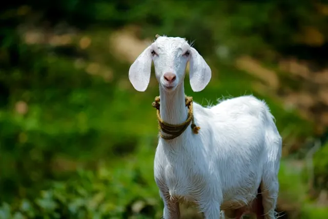Our goat farming service provides comprehensive training and consultancy on all aspects of goat rearing, including breed selection, housing, nutrition, health management, and marketing strategies. Setup Plan: We will assist you in setting up your goat farm, from selecting the appropriate land and constructing suitable housing facilities to procuring quality breeds and establishing a feeding regimen. Our experts will guide you through every step of the process to ensure a successful and profitable goat farming venture.
Pig Farming
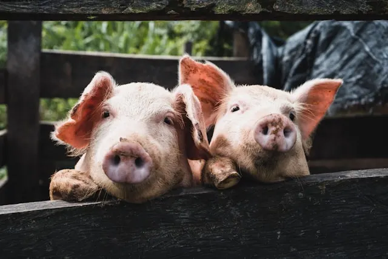Our pig farming service covers essential topics such as breed selection, housing design, feeding practices, disease prevention, and market access strategies, enabling you to establish and manage a thriving pig farm. Setup Plan: Our team will help you design and implement an efficient pig farming setup, including constructing pig pens, sourcing high-quality pig breeds, formulating a balanced diet, and implementing biosecurity measures. We will provide ongoing support to optimize your pig farming operation for maximum profitability.
Snail Farming
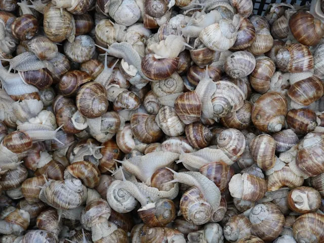With our snail farming service, you'll learn how to create the ideal habitat for snails, manage feeding and breeding, control pests and diseases, and market your snails for optimal returns. Setup Plan: We will assist you in setting up your snail farm, including selecting suitable land with the right soil composition, constructing snail pens or housing units, sourcing quality breeding stock, and implementing effective feeding and management practices. Our experts will guide you in creating a conducive environment for snail growth and reproduction.
Rabbit Farming
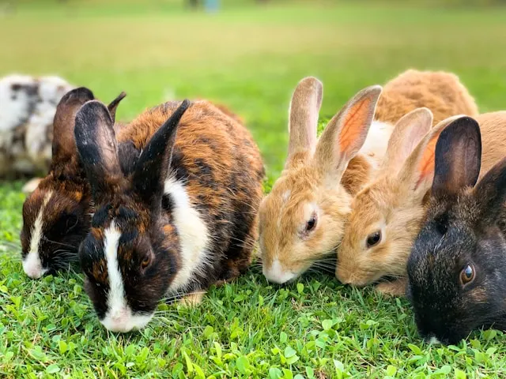Our rabbit farming service covers all aspects of rabbit production, including breed selection, housing construction, feeding practices, health care, and marketing strategies, to help you build a successful rabbit farming enterprise. Setup Plan: We will help you design and set up your rabbit farm, including constructing rabbit cages or housing units, selecting appropriate rabbit breeds, formulating a balanced diet, and implementing biosecurity measures. Our team will provide hands-on training and ongoing support to ensure the success of your rabbit farming venture.
Chicken Farming
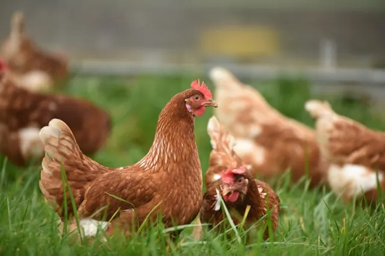Our chicken farming service covers a wide range of topics including breed selection, housing construction, feeding and nutrition, disease prevention, and egg or meat production techniques, equipping you with the knowledge to run a successful chicken farm. Setup Plan: We will assist you in designing and setting up your chicken farm, from constructing chicken coops and providing suitable nesting areas to sourcing quality chicks, formulating feed, and implementing biosecurity measures. Our team will guide you through the process to ensure the establishment of a thriving chicken farming enterprise.
Catfish Farming
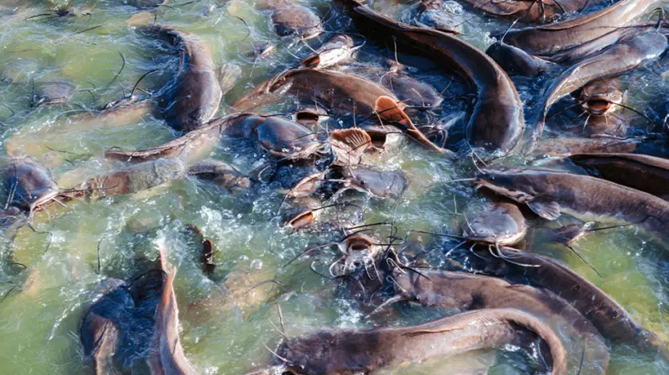Our catfish farming service offers training and consultancy on pond preparation, fingerling production, feeding techniques, disease management, and market linkages, empowering you to run a profitable catfish farming business. Setup Plan: We will assist you in setting up your catfish farm, from selecting the right location and constructing fish ponds to sourcing quality fingerlings, formulating feed, and implementing biosecurity measures. Our experts will guide you through the process to establish a successful and sustainable catfish farming operation.
Turkey Farming

Our turkey farming service provides training and consultancy on turkey breed selection, housing design, feeding practices, disease prevention, and market strategies, enabling you to establish and manage a successful turkey farming enterprise. Setup Plan: We will help you design and set up your turkey farm, including constructing suitable housing facilities, sourcing quality turkey breeds, formulating a balanced diet, and implementing biosecurity measures. Our team will provide ongoing support to optimize your turkey farming operation for profitability and growth.
Plantain Farming

Our plantain farming service provides comprehensive training and consultancy on all aspects of plantain cultivation, including land preparation, planting techniques, pest management, and harvesting strategies. Setup Plan: We will assist you in setting up your plantain farm, from selecting the right land and preparing the soil to planting quality seedlings and implementing effective management practices. Our experts will guide you through every step of the process to ensure a successful and profitable plantain farming venture.
Maize Farming
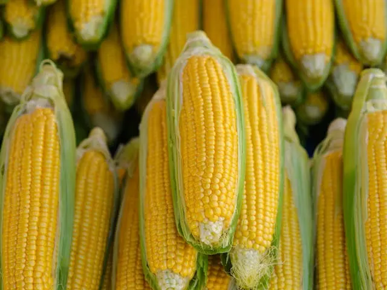Our maize farming service covers essential topics such as soil preparation, seed selection, irrigation practices, and pest control, enabling you to establish and manage a thriving maize farm. Setup Plan: Our team will help you design and implement an efficient maize farming setup, including selecting high-quality seeds, preparing the land, and implementing effective irrigation and pest management strategies. We will provide ongoing support to optimize your maize farming operation for maximum profitability.
Cassava Farming
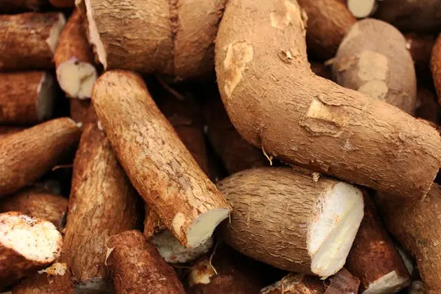With our cassava farming service, you'll learn how to prepare the land, select quality cassava cuttings, manage pests and diseases, and market your cassava for optimal returns. Setup Plan: We will assist you in setting up your cassava farm, including selecting suitable land, preparing the soil, and implementing effective management practices. Our experts will guide you in creating a conducive environment for cassava growth and production.
Potato Farming
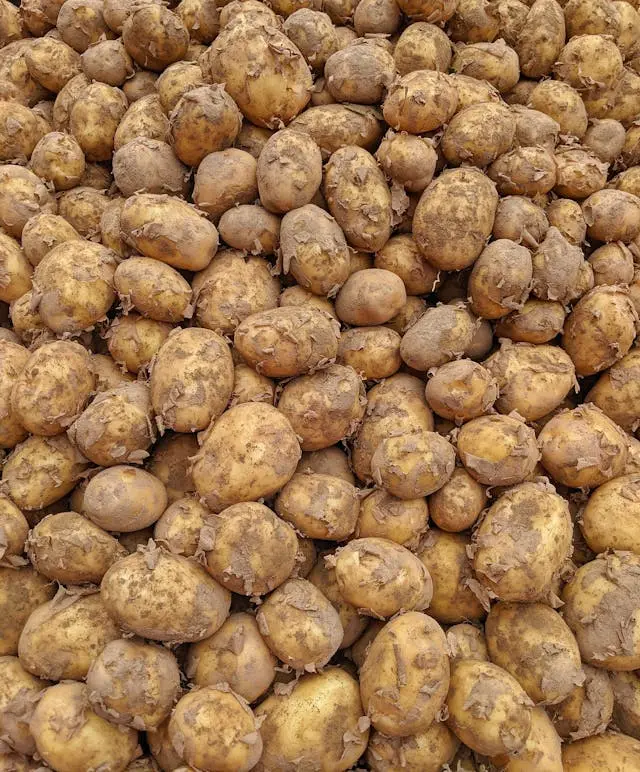Our potato farming service provides training and consultancy on soil preparation, seed selection, pest management, and harvesting techniques, empowering you to run a successful potato farming business. Setup Plan: We will assist you in setting up your potato farm, from selecting the right land and preparing the soil to planting quality seeds and implementing effective management practices. Our experts will guide you through the process to establish a successful and sustainable potato farming operation.
Tomato Farming
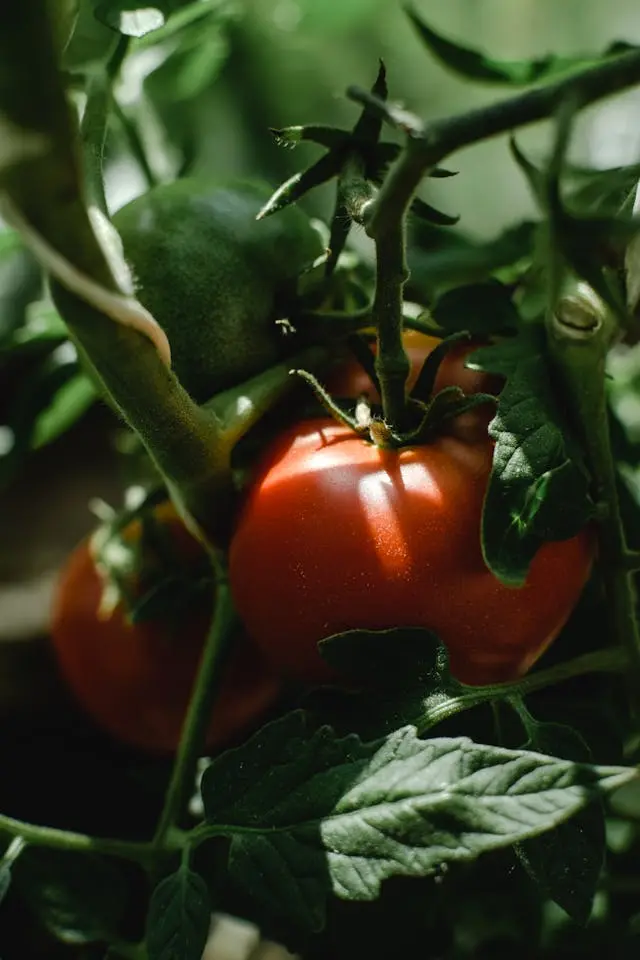Our tomato farming service covers essential topics such as soil preparation, seed selection, irrigation practices, and pest control, enabling you to establish and manage a thriving tomato farm. Setup Plan: Our team will help you design and implement an efficient tomato farming setup, including selecting high-quality seeds, preparing the land, and implementing effective irrigation and pest management strategies. We will provide ongoing support to optimize your tomato farming operation for maximum profitability.
Yam Farming
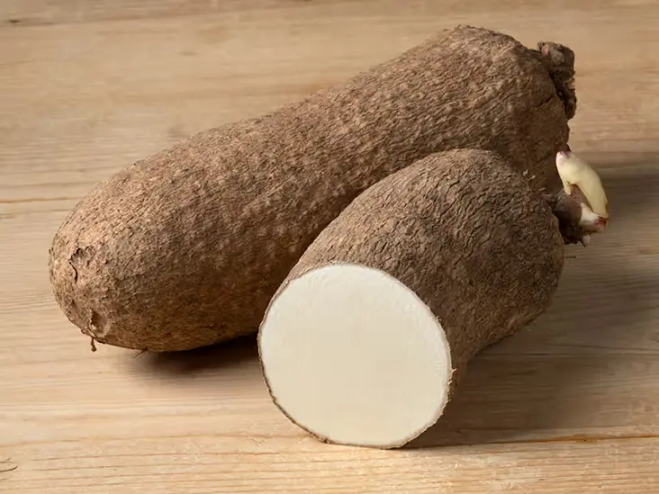Our yam farming service provides comprehensive training and consultancy on all aspects of yam cultivation, including land preparation, planting techniques, pest management, and harvesting strategies. Setup Plan: We will assist you in setting up your yam farm, from selecting the right land and preparing the soil to planting quality seedlings and implementing effective management practices. Our experts will guide you through every step of the process to ensure a successful and profitable yam farming venture.
Cucumber Farming
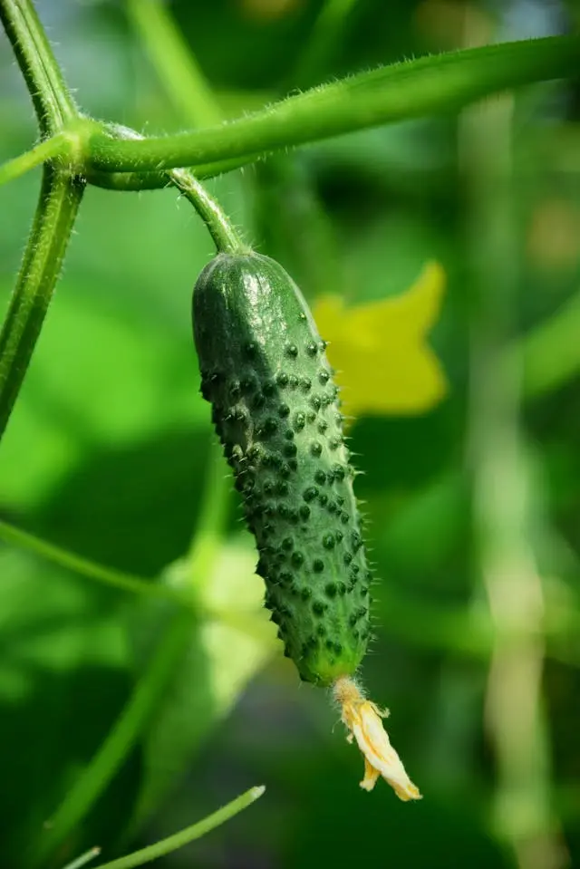Our cucumber farming service covers essential topics such as soil preparation, seed selection, irrigation practices, and pest control, enabling you to establish and manage a thriving cucumber farm. Setup Plan: Our team will help you design and implement an efficient cucumber farming setup, including selecting high-quality seeds, preparing the land, and implementing effective irrigation and pest management strategies. We will provide ongoing support to optimize your cucumber farming operation for maximum profitability.